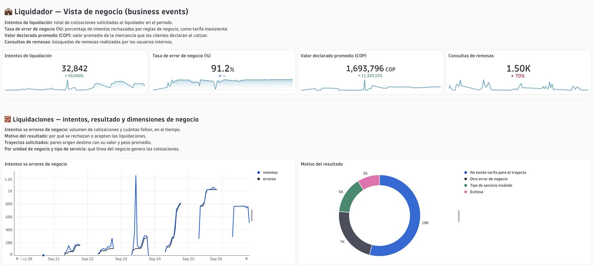
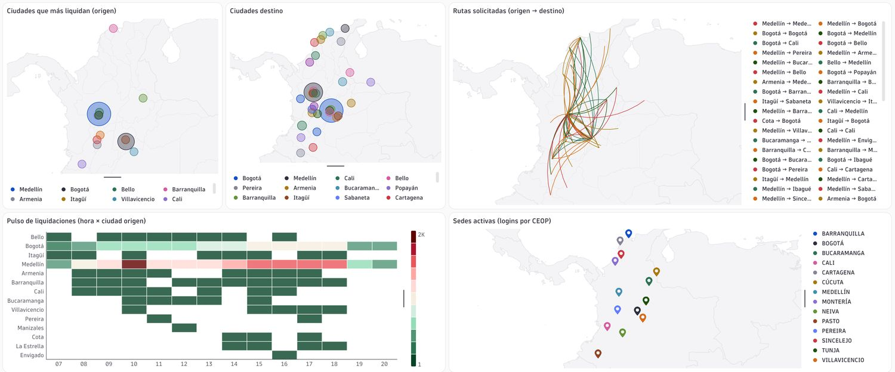
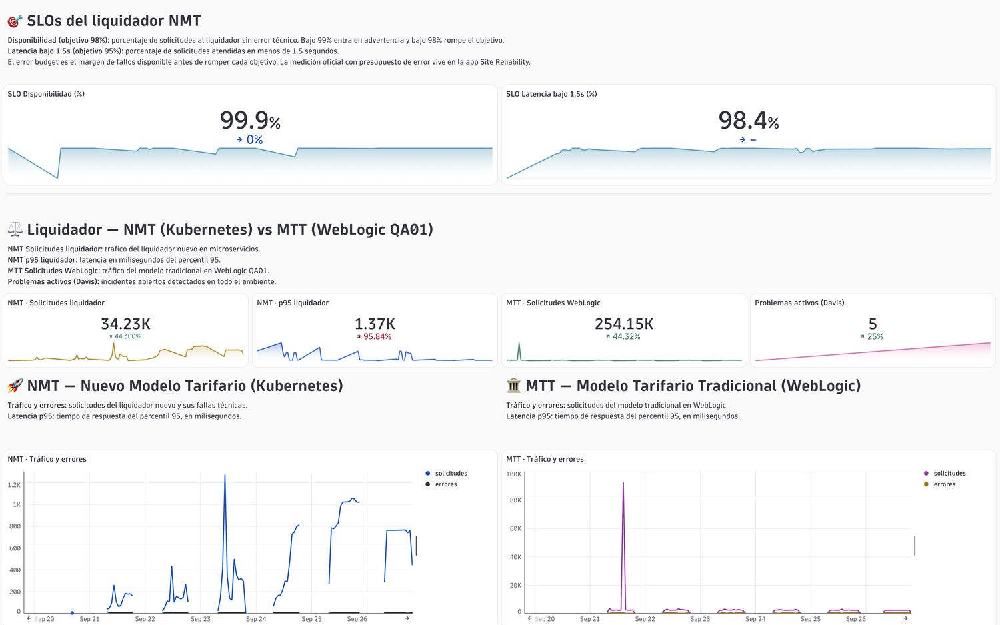

La PoC puso bajo observación el proceso de liquidación de punta a punta: el nuevo modelo tarifario en Kubernetes, el modelo tradicional en Oracle WebLogic, MongoDB, Redis y la experiencia de los usuarios internos. De los seis criterios de éxito acordados, cinco se cumplieron y uno quedó parcial.
5criterios cumplidos
1criterio parcial (trazas de punta a punta)
0criterios sin cumplir
Seguimiento de hilos en WebLogicCumplido
Alertas por degradación en tiempos de servicioCumplido
Picos de CPU y memoria en los microservicios del nuevo liquidadorCumplido
Análisis de logs de MongoDBCumplido
Trazas en todo el procesoParcial
Tablero estratégico en lenguaje de negocioCumplido
Las cifras de este documento corresponden a la semana del 20 al 26 de septiembre de 2026 en un ambiente no productivo. Sirven para demostrar la capacidad, no para sacar conclusiones del negocio en producción.
Criterios de éxito
1. Seguimiento de hilos en WebLogic
Cumplido
Los 18 servidores administrados de los tres dominios (QA01, OSB y SOA) quedaron visibles con hilos, heap, pausas de GC y CPU por servidor.
El cluster Gos sostiene entre 337 y 356 hilos por servidor, frente a 56 a 90 en el resto de QA01. Es el punto a vigilar.
Dos alertas activas: acumulación de hilos con línea base adaptativa y detección de hilos bloqueados por el código BEA-000337. En la semana medida hubo 0 hilos bloqueados.
Límite: se mide el conteo de hilos de la JVM. El detalle de los pools de ejecución por JMX no se habilitó.
2. Alertas por degradación en tiempos de servicio
Cumplido
Tres alertas sobre el percentil 95: liquidador nuevo por encima de 1,5 s, WebLogic QA01 por encima de 5 s y MongoDB o Redis por encima de 1 s.
El liquidador nuevo cerró la semana con p95 de 1,37 s, con picos de hasta 10 s en los arranques de carga de los primeros días.
MongoDB mostró picos de p95 de hasta 400 ms. Redis se mantuvo por debajo de 50 ms.
Límite: la latencia del salto por la VPN entre Kubernetes y WebLogic no se aisló como medida propia.
3. Picos de CPU y memoria en los microservicios del nuevo liquidador
Cumplido
CPU y memoria por microservicio en el cluster tcc-k8s-dev-01. El consumo de CPU es bajo, por debajo de 20 milicores.
liquidadormanager-ms subió de cerca de 550 MB a casi 800 MB entre el 23 y el 25 de septiembre y luego bajó a 450 MB. Es el patrón que este criterio buscaba detectar.
Se añadió saturación del cluster: frenado de CPU, reinicios y pods por fase. El 26 de septiembre había 9 problemas abiertos por pods sin iniciar, en espera o desalojados.
4. Análisis de logs de MongoDB
Cumplido
El archivo mongod.log del servidor mongo-dev se ingiere y se consulta junto con las trazas y métricas del liquidador.
La extensión de MongoDB quedó activa con su tablero de conexiones, operaciones e índices para la base smartlogic.
Límite: la extensión quedó en la versión 2.2 porque la base no usa TLS. El volumen de log en este ambiente es bajo, del orden de 100 registros por día.
5. Trazas en todo el proceso
Parcial
Hay trazas completas dentro de Kubernetes. Un ejemplo recorre 8 servicios y 102 pasos, desde el orquestador hasta Oracle y Redis.
Hay trazas completas dentro de WebLogic.
Brecha 1:liquidador-ms y liquidadormanager-ms no quedaron instrumentados, así que la traza de una liquidación termina en el orquestador. Brecha 2: no se observó una traza que cruce de Kubernetes a WebLogic. Se corrige al instrumentar esos dos servicios y validar con tráfico real.
6. Tablero estratégico en lenguaje de negocio
Cumplido
Dos tableros construidos con solo dos servicios del liquidador: vista de negocio y mapa de rutas con estadísticas.
Muestran intentos de liquidación, motivo de rechazo, valor cotizado, descuentos, peso declarado frente a kilos cobrados, rutas, sedes y canal de origen.
Lo que se vio del negocio
Indicador
Valor en 7 días
Lectura
Intentos de liquidación
32.842
Todos pasan por el orquestador hacia liquidador-ms.
Rechazos por regla de negocio
91,2 %
Cerca de 18 mil por tarifa inexistente para el trayecto y 5 mil por tipo de servicio inválido. Es esperable en pruebas.
Valor total cotizado
$ 262.650.912
Suma de las liquidaciones exitosas.
Valor promedio por cotización
$ 91.452
Varía por canal de origen.
Cotizaciones con descuento
52 %
Incluye el descuento de empleado.
Trayectos más cotizados
3 rutas
Medellín a Medellín (9.330), Medellín a Bogotá (8.977) y Bogotá a Bogotá (7.714).
Sedes con actividad
14
Identificadas por el inicio de sesión de los usuarios.
De los indicadores de negocio planteados al inicio, se midió la exactitud de liquidación. La tasa de reproceso y el ahorro por validaciones no se midieron: necesitan datos de producción y una regla acordada con TCC.
Hallazgos técnicos
Experiencia de los usuarios
77,7 % de las 537 sesiones tuvo al menos un error.
Varias pantallas tardan más de 40 segundos en responder.
El inicio de sesión devolvió errores 401 y 500 en la semana.
Session Replay quedó activo para ver cada sesión por dentro.
Nuevo modelo frente al tradicional
Liquidador nuevo: 34 mil solicitudes. WebLogic QA01: 254 mil.
Disponibilidad del liquidador nuevo: 99,9 % sobre un objetivo de 98 %.
Solicitudes por debajo de 1,5 s: 98,4 % sobre un objetivo de 95 %.
WebLogic
521 mil solicitudes con 0,16 % de error y p95 de 1 s.
El cluster Gos usa cerca del 72 % de un heap de 2 GB.
Pausas de GC de hasta 60 % en el arranque diario.
Algunos servicios pequeños fallan en más del 20 % de sus llamadas.
Seguridad
Más de 800 vulnerabilidades detectadas, entre 3 y 4 críticas.
Una crítica en una librería Java tiene exploit público y corrección disponible.
La revisión de configuración de Kubernetes aprobó el 36 % de las reglas.
No se detectaron ataques durante la PoC.
Lo que quedó por fuera
Tema
Estado
Motivo
Monitoreo sintético de la URL de liquidación
No realizado
La URL es interna y requiere un ActiveGate dedicado dentro de la red de TCC.
Pronóstico de negocio
No concluyente
Los datos de un ambiente de pruebas no tienen una tendencia real.
Agente completo en Kubernetes
Parcial
Dos microservicios del liquidador quedaron sin instrumentar.
Producción
Fuera de alcance
La PoC se ejecutó solo en calidad y desarrollo.
Siguientes pasos recomendados
Llevarlo a producción antes de la temporada. El dimensionamiento de la arquitectura productiva ya está en curso con SETI.
Cerrar la brecha de trazas. Instrumentar liquidador-ms y liquidadormanager-ms y validar el cruce hacia WebLogic.
Acordar las reglas de negocio. Definir con TCC qué cuenta como error de liquidación y los objetivos de disponibilidad y latencia.
Proteger los datos personales. Enmascarar los campos sensibles de las solicitudes antes de capturarlas en producción.
Habilitar el monitoreo sintético. Instalar un ActiveGate dedicado para probar la URL de liquidación desde la red interna.
Atender las vulnerabilidades críticas. Empezar por la librería Java con exploit público.
Evidencia
Capturas de los tableros tomadas el 26 de septiembre de 2026. La versión completa de cada uno está en la sección de archivos originales, al inicio.

Vista de negocio: intentos de liquidación, motivo del resultado y trayectos.

Mapa y estadísticas: origen, destino, rutas y sedes activas.

Nuevo modelo tarifario frente al tradicional, con sus dos objetivos de servicio.